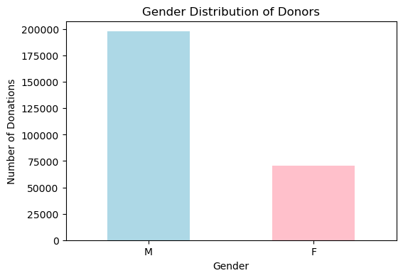
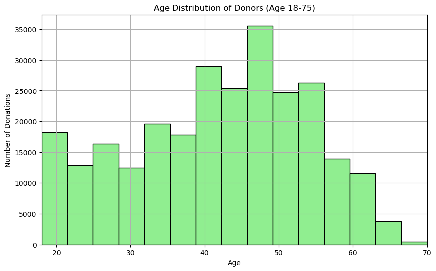
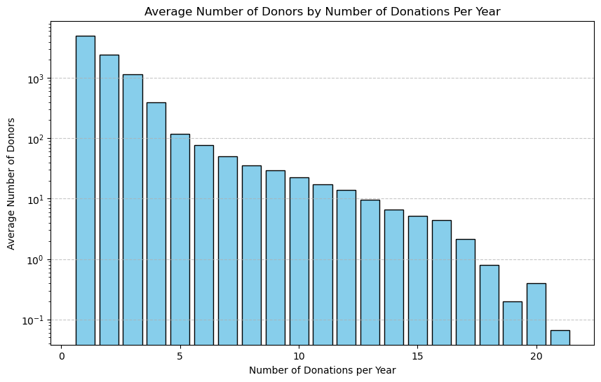

This notebook was created by a previous bachelor student who used for his/her thesis
Author
Unknown
Published
March 30, 2025
Preliminary data analysis - Blood Donations in FVG
Now that the data is cleaned and ready to be analyzed, it’s possible to begin with some basic tasks.
Dataframe importing
First of all, let’s import the needed libraries and the dataset:
Code
import pandas as pdimport matplotlib.pyplot as pltcombined_dataframe = pd.read_csv('../../DATA/FINAL/dataframe_cleaned.csv')# Verifying every NaN has been removed:print(combined_dataframe.isnull().sum())# Printing the first couple lines to check the dataset's format:combined_dataframe.head()
import matplotlib.pyplot as plt# Counting the number of male and female donors:gender_counts = combined_dataframe["gender"].value_counts()# Plotting the gender distribution:plt.figure(figsize=(6, 4))gender_counts.plot(kind="bar", color=["lightblue", "pink"])plt.title("Gender Distribution of Donors")plt.xlabel("Gender")plt.ylabel("Number of Donations")plt.xticks(rotation=0)plt.show()# Showing the raw numbers of male and female donors:print(gender_counts)

gender
M 197761
F 70769
Name: count, dtype: int64
The plot shows how the gender of donators is for the vast majority of males, almost three times as many as females.
Age Distribution
Code
# Plotting the age distribution for donors:plt.figure(figsize=(10, 6))combined_dataframe["age"].hist(bins=30, color="lightgreen", edgecolor="black")plt.title("Age Distribution of Donors (Age 18-75)")plt.xlabel("Age")plt.ylabel("Number of Donations")# Set the x-axis limit to start at 18 and end at 70 - it's impossible to donate outside this age gap in Italy: plt.xlim(18, 70)plt.show()# Printing the average age:print(f"Average donor age: {combined_dataframe["age"].mean():.2f}")

Average donor age: 41.95
Number of Donations per Donor
Code
# Grouping the data by unique_number and year to calculate the number of donations per donor per year:donations_per_donor_per_year = combined_dataframe.groupby(['unique_number', 'year']).size().reset_index(name='num_donations')# Grouping by 'num_donations' to count how many donors donated a specific number of times, then average across years:average_donations = donations_per_donor_per_year.groupby('num_donations').size().reset_index(name='num_people')average_donations['num_people'] = average_donations['num_people'] /len(donations_per_donor_per_year['year'].unique())# Plotting the average number of donors who donated a certain number of times:plt.figure(figsize=(10, 6))plt.bar(average_donations['num_donations'], average_donations['num_people'], color='skyblue', edgecolor='black')plt.title('Average Number of Donors by Number of Donations Per Year')plt.xlabel('Number of Donations per Year')plt.ylabel('Average Number of Donors')plt.yscale('log') # this will change in later patchesplt.grid(axis='y', linestyle='--', alpha=0.7)plt.show()

TODO change tis plot to make it more readable
Type of donations
Code
donation_type_counts = combined_dataframe["donation_type"].value_counts()plt.figure(figsize=(8, 5))donation_type_counts.plot(kind="bar", color="purple")plt.title("Distribution of Donation Types")plt.xlabel("Donation Type")plt.ylabel("Number of Donations")plt.xticks(rotation=45)plt.show()